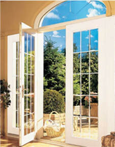
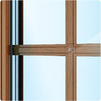
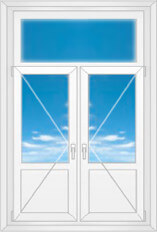

пластиковые двери
Пластиковые двери — это достойный конкурент вечной классике из дерева. Двери из ПВХ профиля устанавливаются не только на балконах, но также используются как входные в магазинах, и межкомнатные во многих офисах.
Купить и Заказать в СПБ
Популярность дверей из пластика обоснована их преимуществами:
Индивидуальность. Обращаясь к нашим партнерам по вопросу установки конструкций из ПВХ, вы можете заказать нужные размеры пластиковых дверей и подходящую конфигурацию.
Надежность. Современное производство предлагает на выбор любой вид профиля, что дает возможность подобрать вариант для любого помещения и климата.
Привлекательность. Белоснежные пластиковые двери со стеклом «облегчают» интерьер, делают помещение более светлым и уютным.
Комфорт. Установив такие двери на балкон или внутри помещения, вы оцените прекрасную шумо- и теплоизоляцию, простоту ухода и долговечность.
Доступность. Двери VEKA имеют наилучшее сочетание цены и качества.
{kind=link}
{kind=link}
БАЛКОННЫЕ
От 7 700 руб.
Привлекательность. Белоснежные пластиковые двери со стеклом «облегчают» интерьер, делают помещение более светлым и уютным.
МЕЖКОМНАТНЫЕ
От 7 700 руб.
Привлекательность. Белоснежные пластиковые двери со стеклом «облегчают» интерьер, делают помещение более светлым и уютным.
ВХОДНЫЕ
От 7 700 руб.
Привлекательность. Белоснежные пластиковые двери со стеклом «облегчают» интерьер, делают помещение более светлым и уютным.
РАЗДВИЖНЫЕ (ПОРТАЛЫ)
От 7 700 руб.
Привлекательность. Белоснежные пластиковые двери со стеклом «облегчают» интерьер, делают помещение более светлым и уютным.
ДОПОЛНЕНИЯ
Пленки
Идеальна для балконных пластиковых дверей снаружи, если нет необходимости открывать их.
Элементы декора
Идеальна для балконных пластиковых дверей снаружи, если нет необходимости открывать их.
Защита от взлома
Идеальна для балконных пластиковых дверей снаружи, если нет необходимости открывать их.
Жалюзи
Идеальна для балконных пластиковых дверей снаружи, если нет необходимости открывать их.
Роллеты
Идеальна для балконных пластиковых дверей снаружи, если нет необходимости открывать их.
пластиковые окна от производителя
Столкнулись с проблемой замены пластиковых окон или установки новых? Мы поможем Вам на взаимовыгодных условиях. Наши пластиковые окна - сочетание качества профильной системы VEKA (первое место по всем независимым анализам), фурнитуры SIEGENIA (ключевой партнер VEKA по всему миру) и стеклопакетов STIS (современное стекло с улучшенными характеристиками).
Но главное в выборе окон ПВХ - уровень монтажа. Все наши сотрудники имеют дипломы об успешном окончании института окон. Практически все наши монтажные бригады работают в компании более пяти лет.
Также важной составляющей взаимовыгодного сотрудничества являются сотрудники отдела продаж. Опытные консультанты всегда помогут подобрать самое лучшее решение под Ваши задачи, и практически любой бюджет.


ОДНОСТВОРЧАТЫЕ
Шестикамерная профильная система для дверей VEKA
Система с превосходными изолирующими характеристиками и высокой шумоизоляцией обеспечит тишину и спокойствие вашего дома.
Высококачественный пластик устойчив к воздействиям внешней среды и не нуждается в специальном уходе.
От 7 700 руб.

ДВУСТВОРЧАТЫЕ
Шестикамерная профильная система для дверей VEKA
Система с превосходными изолирующими характеристиками и высокой шумоизоляцией обеспечит тишину и спокойствие вашего дома.
Высококачественный пластик устойчив к воздействиям внешней среды и не нуждается в специальном уходе.
От 7 700 руб.
ДВУСТВОРЧАТЫЕ С ФРАМУГОЙ
Шестикамерная профильная система для дверей VEKA
Система с превосходными изолирующими характеристиками и высокой шумоизоляцией обеспечит тишину и спокойствие вашего дома.
Высококачественный пластик устойчив к воздействиям внешней среды и не нуждается в специальном уходе.
От 7 700 руб.
АРОЧНЫЕ
Шестикамерная профильная система для дверей VEKA
Система с превосходными изолирующими характеристиками и высокой шумоизоляцией обеспечит тишину и спокойствие вашего дома.
Высококачественный пластик устойчив к воздействиям внешней среды и не нуждается в специальном уходе.
От 7 700 руб.
УСТАНОВКА ПЛАСТИКОВЫХ ДВЕРЕЙ
Установка пластикового окна требует квалифицированных специалистов, имеющих опыт работы по установке металлопластиковых конструкций, т.к. даже малейший «промах» в установке может значительно снизить срок службы металлопластиковых окон. Именно поэтому мы уделяем большое внимание подготовке специалистов компании «окна city». Установка пластиковых окон нашей компанией производится с использованием специальных высокотехнологичных материалов (полностью соответствующих последним требованиям ГОСТов и СНИПов) - это залог надежности и долговечности конструкции и комфортных условий проживания.
Время на установку одного окна занимает около двух часов. Пластиковые окна выставляют по трём плоскостям. Далее, в зависимости от особенностей строения (к примеру, бетонные или кирпичные стены) монтажники осуществят крепление профиля на анкерные пластины или болты. Расстояние между откосами и оконной коробкой заполняется монтажной пеной в два захода, т.к. пена должна быть достаточно плотной. На этом монтаж пластиковых конструкций завершается, т.к. при демонтаже старых окон и монтаже новых неизбежно повреждаются стены оконного проёма. А это значит, что остаётся произвести отделку откосов, после которой новые пластиковые окна будут радовать Вас долгие годы.
В компании «ОКНА CITY» монтаж пластиковых конструкций серцифицирован Институтом Окна.
Успех установки пластиковых окон во многом зависит от точности предварительных расчётов размера оконного проёма. Вызов мастера-замерщика можно оформить прямо на сайте.
ФОТОГАЛЕРЕЯ